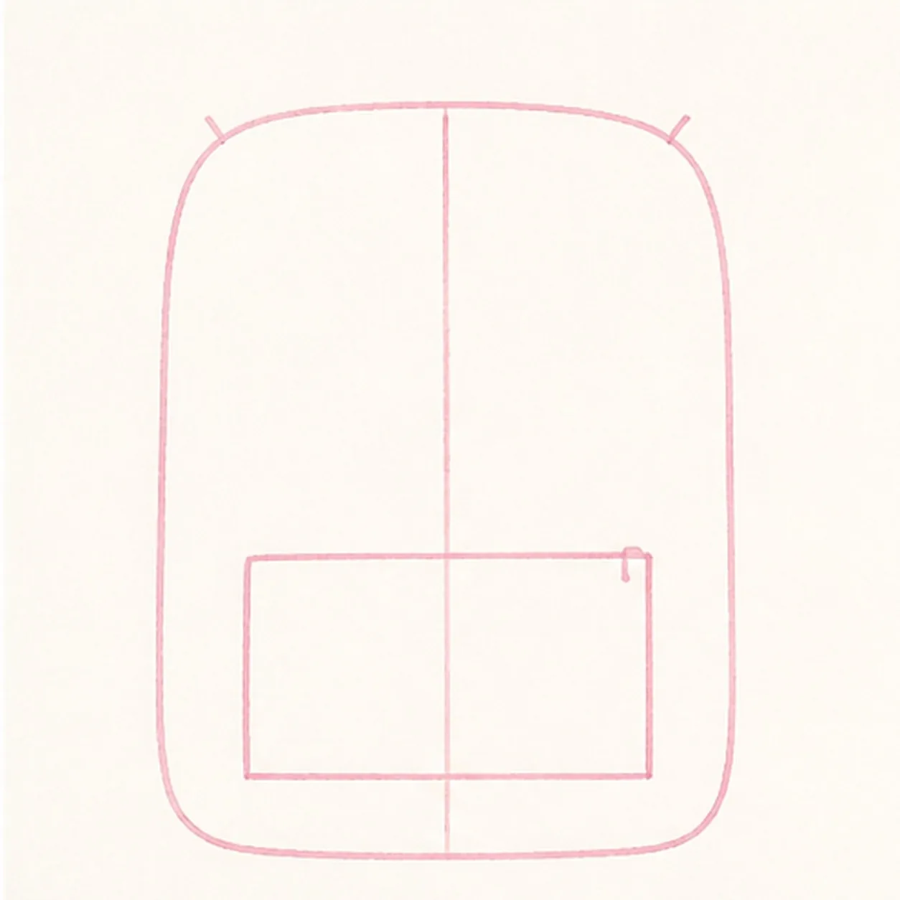
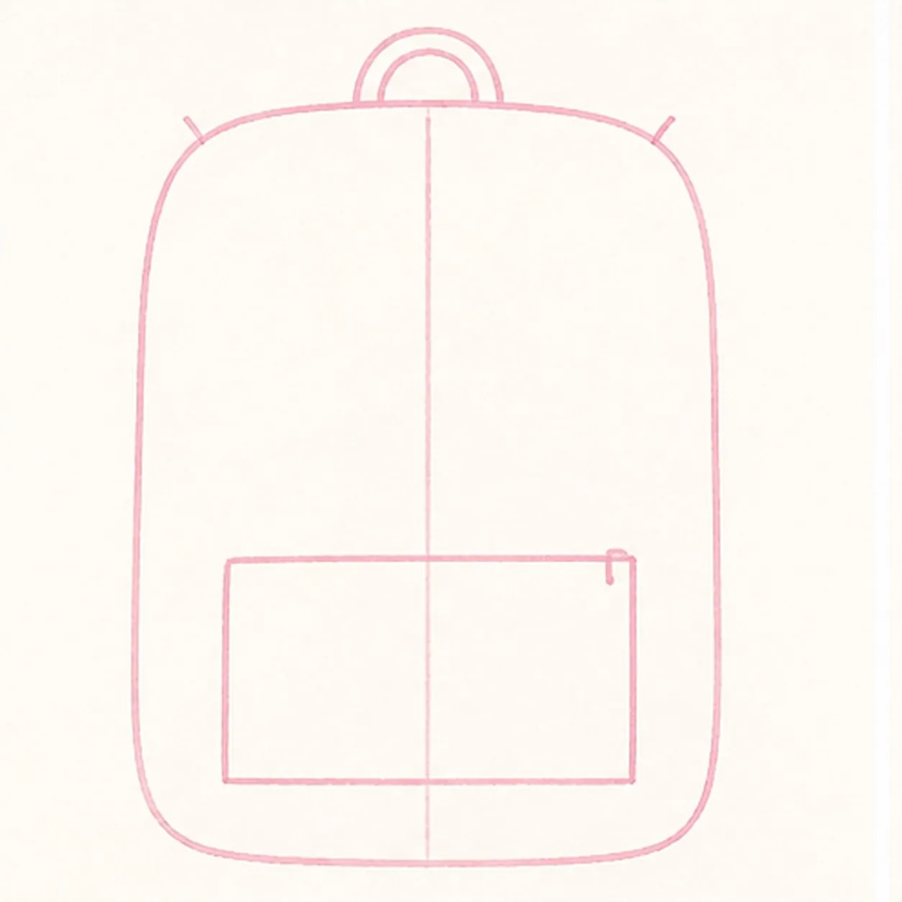
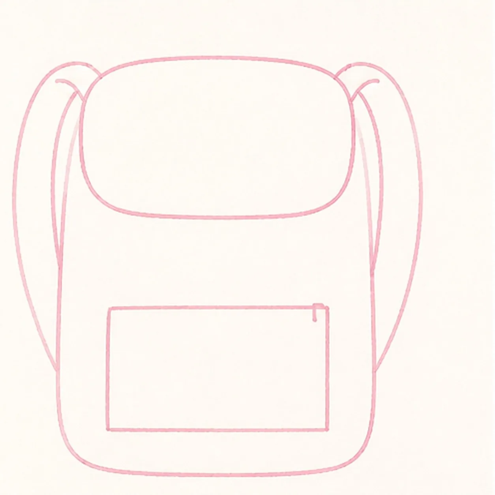
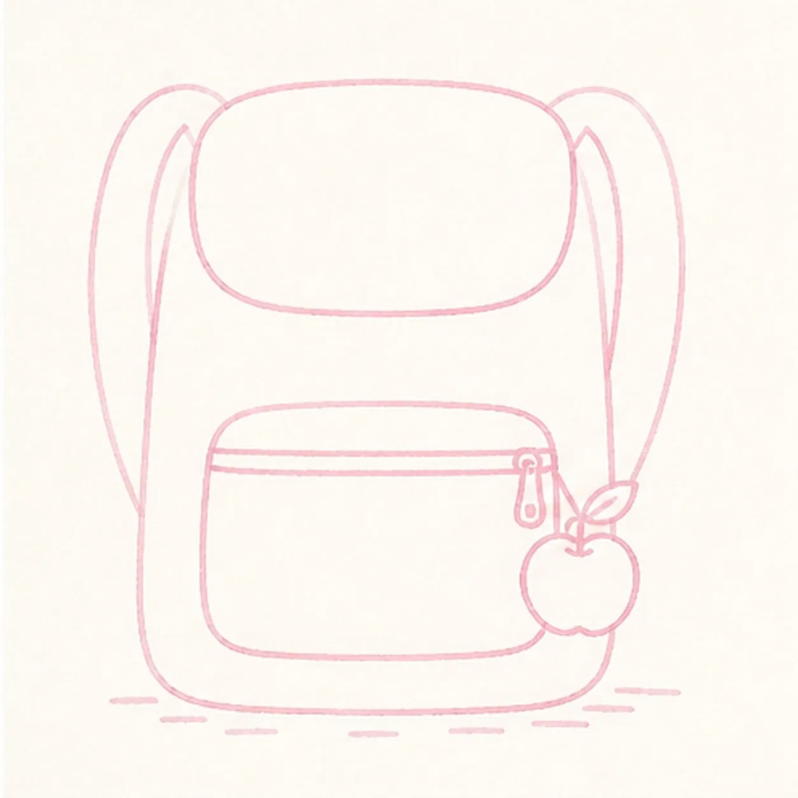

Marker ready?
Let's draw a cartoon school backpack with an apple keychain
Treat this as one playful practice round: sketch the idea loosely, simplify the shapes, then commit with confident marker outlines and bright fills.
-
01

Map the backpack guides
Use pale pencil to place one open tall bag envelope, one centerline, two open strap routes, one pocket box, one apple circle with a leaf tick, two highlight ticks, and one short shadow route.
Marker tip: Keep this first frame under two minutes. The bag, straps, pocket, apple, and leaf should still be incomplete placement marks—not finished pale outlines.
-
02

Connect the backpack body
Connect only the upright rounded bag silhouette and short top handle over the pale construction while leaving straps, flap, pocket, and apple as open guides.
Marker tip: Pull each side of the bag in one long relaxed curve. Keep the pocket box and apple circle visible as placement guides for the later steps.
-
03

Add straps and flap
Draw exactly two curved shoulder straps behind the bag and one rounded top flap on the established routes, keeping the pocket and apple open.
Marker tip: Keep the straps the same width as they curve down both sides. Let the flap overlap the body cleanly instead of adding a second rim around it.
-
04

Draw the pocket and keychain
Draw one rounded front pocket, one curved zipper seam with a short pull, one apple with exactly one leaf on the pull, two open highlight reserves, and one broken shadow route.
Marker tip: Make the pocket lower than the flap and keep the apple small enough to hang beside the bag. Leave both highlight shapes as plain paper from the start.
-
05
Ink and map every color
Ink only the established contours, then place visible coral, yellow, teal, red, green, and navy marker strokes in every planned color region without completing the fills.
Marker tip: Ink the zipper pull and apple first, then rotate the page for long bag curves. Use directional strokes and leave small unfilled gaps for the final pass.
-
06
Finish the school-ready bag
Complete only the established marker fills, selectively strengthen existing black contours, and add small highlight and shadow accents.
Marker tip: Preserve the two paper highlights and count two straps, one pocket, one apple, and one leaf before stopping. Do not add books, pencils, a face, or lettering that the earlier steps did not build.